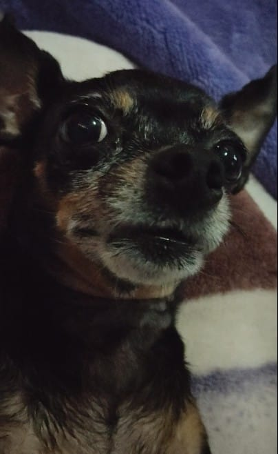
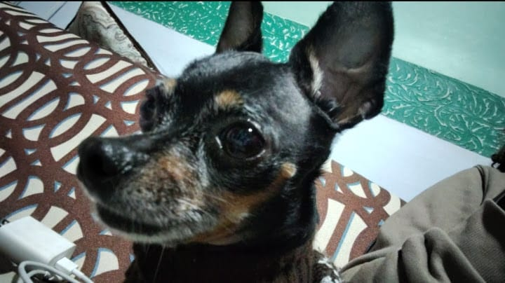
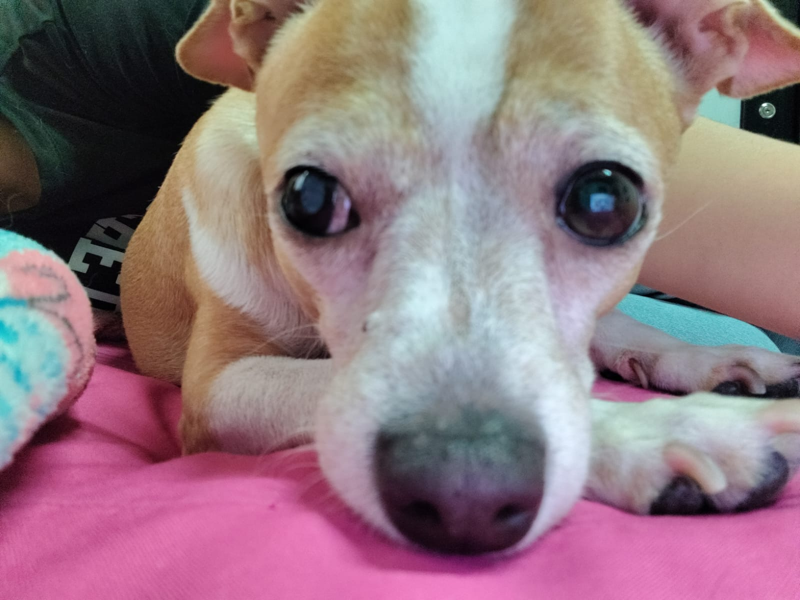
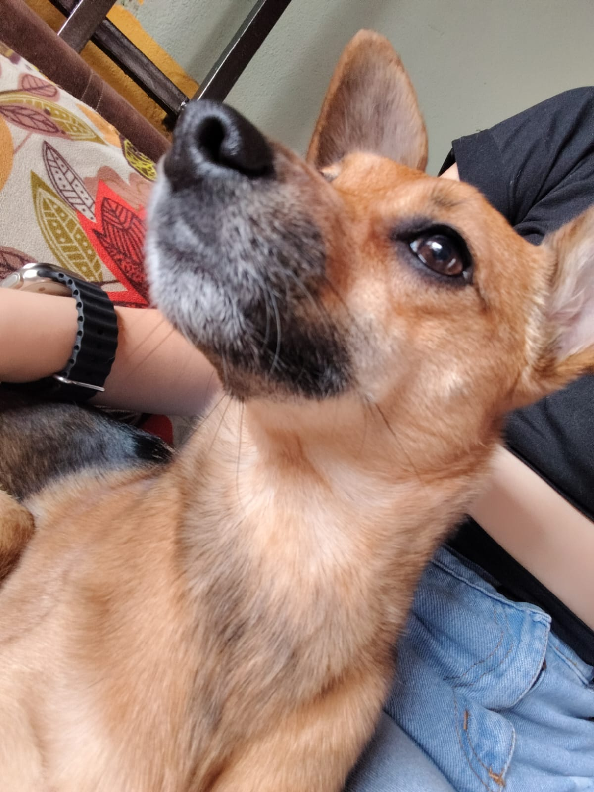
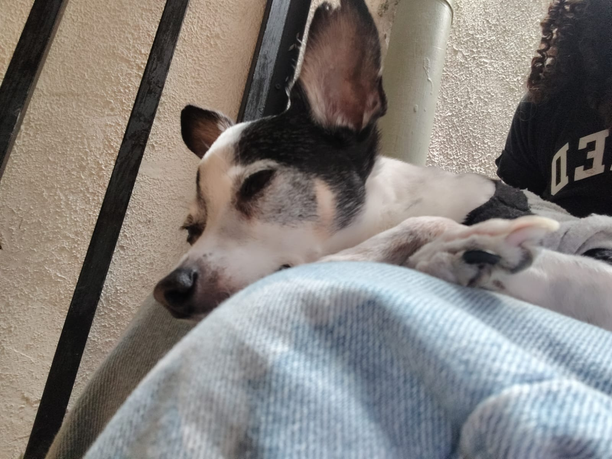
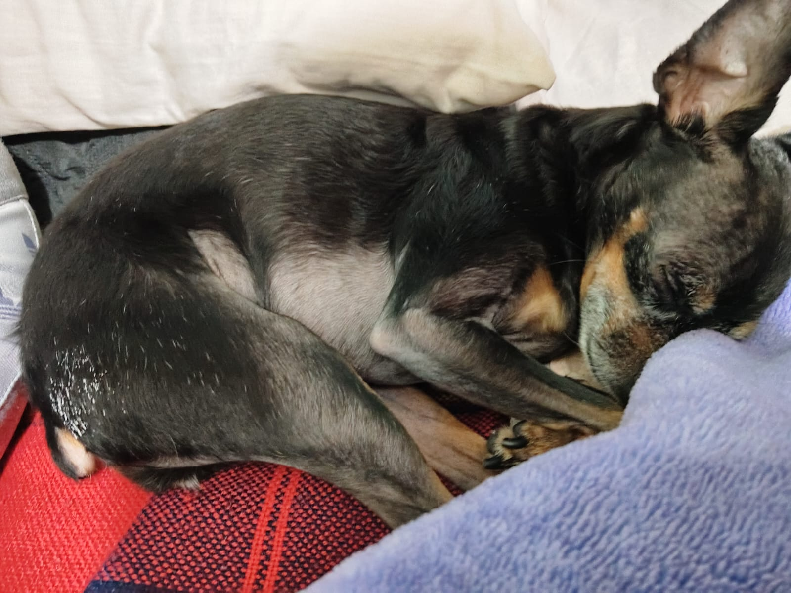

Mascotas de mi familia
A continuacion mostrare a los perritos que hacen parte de mi famila

Lupe alias "Maria lu"
Es mi perrita tiene 8 años conmigo y me la regalaron por mi primera comunion

Mateo alias "El gordo Mateo
Tiene 8 años en la familia y es unico varon

Kira alias "kirris"
Tiene 7 años y es rescatada de la calle

Teddy alias "Tery Tery"
Lleva en la familia aproximadamente 5 añitos es la mas viejita y es rescatada de la calle

Foto adicional de lupe
Lupe en su momento feliz
